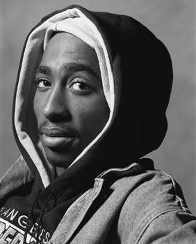

-

Kendrick Lamar
Artist (1987)
Kendrick Lamar is an American rapper, songwriter, and record producer. Known for his complex and impactful lyrics.
-

Tupac Shakur
Artist (1971 - 1996)
Tupac Shakur, also known as 2Pac, was one of the most influential rappers of all time, known for his politically charged lyrics.
-

MF DOOM
Artist (1971 - 2020)
MF DOOM was a British-American rapper and producer, known for his unique style and use of a masked alter ego.